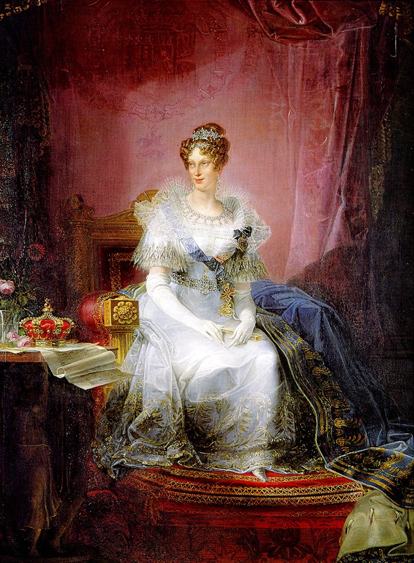
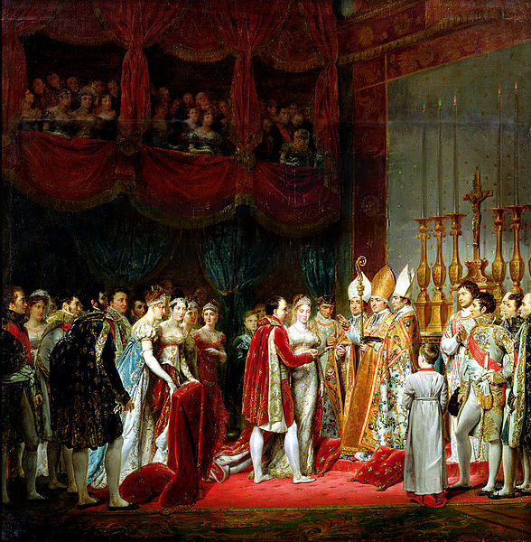

Napoléon, sau trận đại thắng vẻ vang diệt quân Autriche ở Wagram (6.7.1809) đã thành vị chúa tể tối cao của toàn thể Âu châu. Hai địch thủ ghê gớm nhất đã bị đại bại, Hoàng đế Alexander của Russie đầu hàng ở Tilsitt và Hoàng đế Francois của Autriche ký hiệp ước nhượng bộ ở Vienne, cả lục địa Âu châu không còn ai dám đương đầu với ông nữa.
Trở về Paris, vị Hoàng đế hiển hách của nước Pháp mới bắt đầu tổ chức hệ thống hòa bình trên lục địa, và củng cố triều đại Napoléon. Toàn dân nước Pháp đều mong mỏi Hoàng đế có con trai để đảm bảo Ngai vàng. Hoàng hậu Jossphine vì không sinh sản được nữa, nên bị vua li dị và Nữ Bác tước Marie Walewska, cô vợ trẻ đẹp xứ Ba Lan, rất được Hoàng đế yêu chuộng nhưng nàng sẽ chỉ là người yêu vĩnh viễn của Napoléon mà thôi. Tình thế chính trị của nước Pháp và của Âu châu lúc bấy giờ xúi giục Napoléon phải cưới hoặc một Công chúa của Hoàng đế Nga, hoặc một Công chúa của Hoàng đế Autriche.
Vì lẽ đường sá quá xa xôi và Nga hoàng chậm trả lời, nên Napoléon quyết định kết hôn với nữ quận công Marie Louise, công chúa của Autriche, con gái của Hoàng đế Francois. Cũng như Quang Trung ở Việt Nam trước đó mười mấy năm đã đòi cưới con gái của Hoàng đế Càn Long vậy.
Đám cưới chính trị và ngoại giao này lại xảy ra không khác nào một tiểu thuyết ái tình ly kỳ, gay cấn la. Vì mục đích cưới vợ lần này là kiếm một đứa con trai, nên Napoléon đã thốt ra một câu rất lý thú:
“Ta sẽ cưới một cái bụng!”
Con trai? Thì Napoléon đã có hai đứa con ngoại tình: của nàng cung nữ Denuetle, và của cô vợ Ba Lan, Marie Walewska. Nhưng Napoléon muốn có một Hoàng nam với một Hoàng hậu chính thức, xứng đáng với ngôi Hoàng đế của ông. Bên Autriche, vua và triều đình cũng vội vàng ưng thuận gả công chúa Marie Louise cho Napoléon để nhờ đó mà xin xỏ được đôi phần êm dịu bớt trong hiệp ước Vienne vừa ký sau trận đại chiến ở Wagram.
Napoléon chưa biết mặt vì chưa gặp Marie Louise lần nào. Ông chỉ nghe nói rằng công chúa nước Autriche không đẹp bằng Joséphine nhưng duyên dáng. Ông hỏi ý kiến hội đồng gia tộc và cả triều đình, ai nấy đều tán thành, rồi ông phái người con của Joséphine, Eugène de Beauharnais, sang cầu hôn chính thức Marie Louise. Con Marie Louise thì nghe đến cái tên của Napoléon nàng đã nhún vai, trề môi, xoay tròn đôi mắt to tướng, nói với các cung nữ:
“Người ta đồn rùm lên là hắn muốn cưới ta, nhưng ta không lo ngại. Ta chỉ thương hại nàng công chúa nào bị hắn lựa chọn làm nạn nhân cho chính trị của hắn. Chứ ta thì ta nhất định không đời nào lấy hắn.”

Marie Louise cứ tưởng tượng Napoléon Bonaparte là một ông già bị ghê tởm, dữ tợn, một hung thần đáng ghét. Lúc bấy giờ Napoléon 40 tuổi, Marie Louise 18 tuổi. Nàng là con gái lớn của hoàng đế Francois. Nàng không đẹp lắm, vóc người đẫy đà cao lớn, bộ ngực thật to, nhưng hai cánh tay nhỏ, hai bàn tay mũm mĩm, cặp mắt lồi, đôi môi dày như thèm thuồng khao khát vật dục. Kể về toàn diện, Công chúa Marie Louise thua xa nữ Bá tước Marie Walewska, và cũng không sánh được với cựu Hoàng hậu Joséphine.
Về khả năng, thì nàng có học 6 thứ tiếng ngoại ngữ, đánh dương cầm nghe được, về không đến nỗi tệ trí óc thông minh vừa vừa thôi. Từ nhỏ đến lớn, Công chúa ở luôn trong cung điện, ít được cơ hội giao du rộng rãi. Tính tình mềm yếu, non dạ, không cương quyết, thích chơi bời, óc không có lý tưởng.
Công chúa không thích nước Pháp, và thù Napoléon vì ông đã đánh bại nước Autriche ba lần, và đã hai lần đuổi thân phụ của nàng, là hoàng đế Francois, ra khỏi kinh thành Vienne.
Nhưng chính vì bại trận, và sợ sệt Napoléon, nên Hoàng đế nước Autriche đã nhất định dùng cô con gái lớn làm vật hy sinh, dâng nàng cho vị chúa tể của nước Pháp và của Âu châu để cầu xin chút lượng khoan hồng giữ vững địa vị, nuôi chí phục thù để rửa hận mai sau.
Nhưng không dám ép duyên con gái, Hoàng đế Francois sai vị Tể tưởng Metternich đến thuyết phục nàng. Công chúa Marie Louise trả lời:
- Nếu vì quyền lợi của Phụ hoàng ta thì phụ hoàng ta muốn sao, ta cũng chiều theo ý ngài.
Nói như vậy, tức là chịu rồi vì Công chúa đã biết rõ ý định của vua cha. Vả lại tất cả hoàng gia Autriche và toàn thể chính phủ đều đồng thanh khuyên nhủ công chúa nhận lời làm vợ Napoléon, làm Hoàng hậu nước Pháp Marie Louise tuy hồi đầu phản đối, khinh bỉ, nhưng rồi thích được vinh dự làm Hoàng hậu nước Pháp nấp bóng một vị César của châu Âu, nên nàng hăng hái nhận lời ngay.
Cuộc hôn nhân của Napoléon với Marie Louise như thế không phải là một cuộc hôn nhân vì ái tình, nhưng cũng không phải là một cuộc hôn nhân vì ái tình, nhưng cũng không phải là một cuộc hôn nhân gắng gượng.
Nó vẫn thích ứng với nhu cầu lịch sử thời bấy giờ, hợp với quyền lợi của hai nước Pháp và Autriche. Nó cũng hợp với tâm lý và khát vọng của Công chúa không thích nước Pháp, và thù Napoléon vì ông đã đánh bại nước Autriche ba lần và đã hai lần đuổi thân phụ của nàng, là hoàng đế Francois ra khỏi kinh thành Vienne.
Nhưng chính vì bại trận, và sợ sệt Napoléon, nên Hoàng đế nước Autriche đã nhất định dùng cô con gái lớn làm vật hy sinh, dâng nàng cho vị chúa tể của nước Pháp và của Âu châu để cầu xin chút lượng khoan hồng giữ vững địa vị, nuôi chí phục thù để rửa hận mai sau.
Nhưng không dám ép duyên con gái, Hoàng đế Francois sai vị Tể tướng Metternich đến thuyết phục nàng. Công chúa Marie Louise trả lời:
- Nếu vì quyền lợi của Phụ hoàng ta thì phụ hoàng ta muốn sao, ta cũng chiều theo ý ngài.
Nói như vậy, tức là chịu rồi vì Công chúa đã biết rõ ý định của vua cha. Vả lại tất cả hoàng gia Autriche và toàn thể chính phủ đều đồng thanh khuyên nhủ công chúa nhận lời làm vợ Napoléon, làm Hoàng hậu nước Pháp Marie Louise tuy hồi đầu phản đối nước Pháp nấp bóng một vị César của châu Âu, nên nàng hăng hái nhận lời ngay.

Đám cưới vua Naoléon và Marie Louise
Cuộc hôn nhân của Napoléon với Marie Louise như thế không phải là một cuộc hôn nhân vì ái tình, nhưng cũng không thể là một cuộc hôn nhân gắng gượng.
Nó vẫn thích ứng với nhu cầu lịch sử thời bấy giờ, hợp với quyền lợi của hai nước Pháp và Autriche. Nó cũng hợp với tâm lý và khát vọng của Công chúa Marie Louise muốn tọa hưởng hạnh phúc tột bực của một địa vị cao sang nhất, vẻ vang nhất, oai nghi nhất, trên tất cả các ngai vàng Âu châu.
Napoléon có quyền kiêu hãnh. Từ một viên Trung úy pháo binh 1795, mới 14 năm qua, đã trở thành Hoàng đế của nước Pháp, sắp cưới Công chúa của một hoàng gia danh tiếng nhất châu Âu, Napoléon ngày đêm mong đợi Công chúa Marie Louise mau mau qua Paris làm vợ mình.
Được tin Công chúa đã nhận lời đính hôn, Napoléon vui mừng viết thư cảm ơn nàng. Rồi ông sai Thống chế Berthier làm Đặc sứ sang Viene, thủ đô Autriche, để đại diện Hoàng đế nước Pháp làm lễ rước dâu. Em gái của ông, Công chúa Caroline, cũng được ông cho sang Vienne, đem lễ vật và đồ nữ trang quý báu để tặng Marie Louise, và sẽ cùng ngồi một chiếc xe tứ mã với nàng trên đường về Pháp.
Trong lúc chờ đợi, ông hỏi viên y sĩ Corvisart:
- Thí dụ một người đàn ông 60 tuổi lấy vợ, còn có thể có con được nữa không?
- Tâu Bệ hạ, có thể được ạ.
- 70 tuổi?
- Tâu Bệ hạ, 70 tuổi cũng còn có con.
- Như thế thì trẫm mới 40 tuổi, Công chúa Marie Louise 18 tuổi, chắc có nhiều con lắm hả?
- Muôn tâu Hoàng thượng, trong 10 năm nữa ngài có thể đặt một Hoàng tử trên mỗi ngai vàng của Âu châu.
Nóng ruột muốn biết rõ Marie Louise đẹp như thế nào, ông hỏi Lejeune, viên quan hầu của Thống chế Berthier, ở Viene vừa đem về một tấm ảnh của Marie Louise gởi tặng Hoàng đế:
- Xem ảnh không biết rõ được người. Mị phải nói thật cho ta nghe, theo mi nhận xét thì công chúa Marie Louise có đẹp không?
- Tâu Hoàng thượng, Công chúa xinh lắm.
- Xinh lắm, nghĩa là thế nào? Công chúa có cao không?
- Tâu ngài, Công chúa cao như Hoàng hậu xứ Hollande.
(Hoàng hậu xứ Hollande, tức là cô Hortense de Beauharnais, con gái riêng của Joséphine, con nuôi của Napoléon, đẹp lộng lẫy, được Napoléon rất yêu chuộng và gả cho Louis Bonaparte, em ruột của ông, được ông cho làm vua và Hoàng hậu xứ Hollande).
- Tóc của nàng màu gì?
- Tâu ngài, tóc của công chúa cũng như tóc của hoàng hậu xứ Hollande.
- Thế thì nàng giống hệt hoàng hậu xứ Hollande à?
- Tâu Hoàng thượng tất cả những điều ngài hỏi, con trả lời đúng theo sự thật.
Napoléon đuổi Lejeune ra ngoài rồi quay lại than phiền với quan thị vệ, đại thần Telleyrand:
- Trẫm khó mà biết được sự thật, chúng nó chỉ nói nịnh thôi. Xem ảnh, trẫm biết rằng Marie Louise chẳng đẹp chút nào. Nhưng Trẫm không cần: miễn là nàng hiền lành và đẻ cho TRẫm một bầy con trai kháu khỉnh và mập thù lù như thế này này, thì trẫm sẽ yêu nàng như yêu người đàn bà đẹp nhất thế giới vậy.
Marie Louise có gửi qua Paris một chiếc giày của nàng dùng làm kiểu cho thợ giầy ở Paris đóng một đôi giày đẹp để nàng mang hôm lễ cưới. Chiếc giày kiểu của công chúa hình thức nhỏ nhắn, xinh xắn, trông dễ thương. Napoléon cầm lên ngắm nghía, khen:
“Xem một chiếc giày này, trẫm cũng đã mê công chúa rồi đó! Có ai có được bàn chân bé nhỏ như thế này đâu!”
Trong lúc Napoléon sốt ruột muốn gặp vị hôn thê ngay lập tức, thì Marie Louise cũng đã được lịnh vội vã từ giã Vienne sang Paris. Đường mây thăm thẳm, dặm liễu xa xôi, đoàn xe tứ mã cầm hiệu kỳ chữ N, ngày đêm không nghỉ ngơi, chạy vùn vụt lên đèo, xuống ải, vượt núi, băng sông, đưa công chúa về mau mau nơi lâu đài hoa lệ tại đây Hoàng đế, hai tay chắp sau lưng, đi lại đi qua, hồi hộp đợi chờ…
Rất nịnh đầm, và để tỏ lòng ân cần tha thiết, ngày nào Napoléon cũng gởi đến tận tay vị hôn thế một bó hoa quý và một bức thư âu yếm, để nàng đọc dọc đường.
Công chúa cũng hồi âm mỗi ngày bằng những mảnh giấy xanh xanh, những câu văn khách sáo, lời thư vô vị mà Napoléon vẫn đọc say mê.
Ngày 27 tháng 3, được tin đoàn xe rước Marie Louise đang tiến gần đến Soissons, cách Paris gần 150 ki lô mét, Napoléon không nhẫn nại đợi chờ được nữa, truyền lịnh sửa soạn gấp rút một chiếc xe song mã để ông thân hành đi Soissons đón công chúa. Ông muốn có cuộc gặp gỡ đột ngột để cho Marie Louise ngạc nhiên chơi. Thống chế Murat cũng được phép đi theo Hoàng đế để đón vợ ông là công chúa Caroline, trời mưa như thác đổ. Chiếc xe song mã được lịnh chạy hết tốc lực để kịp đến Soissons gặp đoàn xe của Marie Louise. Trời đã gần tối, Napoléon đến làng Courcelles, cặp chiếc xe trạm đi tiên phong trong đoàn xe công chúa. Trời vẫn mưa ào ào. Napoléon xuống xe, chạy vào đụt mưa trước cửa nhà thờ. Một lúc sau, đoàn xe Marie Louise đến nơi. Napoléon phóng ra đường cái, đón chiếc xe của vị hôn thê.
Người đánh xe vừa trông thấy ông, liền ghìm giây cương ngựa, cho xe ngừng. Y nhảy xuống đường, đứng chào và hô to lên:
- Hoàng đế!
Napoléon mỉm cười, làm dấu hiệu bảo y đừng la to như thế, rồi không cần theo nghi lễ nào cả, ông vội vàng mở cửa xe công chúa, thót vào xe ngồi kề nàng, ôm lấy nàng, hôn lấy hôn để…Marie Louise vừa ngạc nhiên, vừa kinh hoảng, trong giây phút say sưa bất thần nàng không nói được một lời. Napoléon nắm bàn tay vợ, âu yếm hỏi han, cười đùa vui vẻ, giỡn cợt ngây thơ y như một chàng thanh niên si tình 20 tuổi.
Ông truyền lịnh cho xe tiếp tục chạy, không ngừng.
Ông thấy nàng đẹp, đẹp hơn ông tưởng tượng. Và dù sao nàng cũng là một vị Nữ Quận chúa, điệu bộ, cử chỉ, ngôn ngữ có vẻ quý phái nhưng vẫn là ngây thơ, rụt rè, e lệ, khiến ông yêu ngay. Marie Louise qua phút kinh ngạc vừa rồi, cũng cảm mê ông liền. Trước kia nàng tưởng ông dữ tợn lắm, không dè nàng gặp một vị Hoàng đế còn trai trẻ với cặp mắt nhìn nàng rất âu yếm, nụ cười chân thật, diệu hiền. Rồi hai bên chuyện trò thân mật nhau ngay. Nàng không còn giữ gìn e lệ nữa.
Đến thành phố Compiègne, cách Paris còn trên 120 ki-lô-mét, trời hãy còn mưa, và tối đen như mực. Napoléon muốn nghỉ đêm tại đây. Hoàng đế miễn lễ nghi cho tất cả các nhân vật cao cấp và các phái đoàn dân chúng đến chào mừng. Ngài chỉ muốn dùng bữa riêng với Marie Louise trong căn phòng vắng vẻ, không ai được quấy rầy. Và ngài muốn Marie Louise làm vợ của Ngài ngay đêm nay. Ngài hỏi công chúa:
- Trước khi em ra đi, thầy mẹ của em bảo em như thế nào?
Công chúa mỉm cười, âu yếm đáp:
- Thầy mẹ em bảo em là hoàn toàn thuộc về anh, và tuân lời anh về mọi việc.
Tuy chưa về đến Paris để làm lễ cưới, và cũng chưa chính thức là hoàng hậu của nước Pháp, nhưng đêm nay Marie Louise đã hoàn toàn thuộc về vị Hoàng đế yêu quí của nàng.
QUỐC VƯƠNG LA MÃ.
Hôn lễ cử hành ngày 1.4.1810, dĩ nhiên là vô cùng trọng thể.
Làm vợ Napoléon, Hoàng hậu Marie Louise được tràn trề hạnh phúc, hưởng đầy đủ tất cả tình yêu tha thiết của chồng.
Trong một bức thư viết về hoàng đế Autriche, thân phụ của nàng, Marie Louise đã có đôi lời tâm sự:
“Từ khi con đến đây, luôn luôn con được Người yêu quí. Con rất mang ơn Người, và cũng đáp lại bằng tình yêu chân thật…Người săn sóc đến con một cách âu yếm niềm nở khiến con vô cùng cảm động…con sung sướng lắm…”
Metternich, đại sứ Autriche ở Paris, cũng tường trình với hoàng đế Francois trong một bức thư, có đoạn như sau:
“Hoàng đế Napoléon lúc nào cũng tỏ ra rất thương yêu công chúa và công chúa cũng thông cảm với Ngài sâu đậm và chiều theo ý Ngài. Công chúa rất phấn khởi và hân hoan.
Trong một thư khác, Marie Louise viết cho chú của nàng, là Quận Công Wuzboung:
“Cháu không muốn để cho người buồn phiền một tý nào cả”
Marie Louise quấn quít luôn bên cạnh chồng. Có khi bận nhiều công việc, Napoléon không gần gũi nàng trong vài ba hôm, thì nàng nhớ nhung, buồn rầu, khóc lóc.
Nàng viết thư cho công chúa Caroline, em ruột của Napoléon:
“Xa người một ngày tôi chịu không được. Người đi kinh lý nơi nào, tôi cũng hy vọng đi theo bên sát cạnh Người…”
Năm ấy Hoàng hậu có thai. Rồi ngày 20.3.1811, 22 tiếng súng đại bác báo tin Thái tử ra đời, được Napoléon banngay cho chức vị “Quốc Vương La Mã”. Không những riêng triều đình và hoàng gia vui mừng được thấy Napoléon đã có thái tử kế vị, mà toàn thể nhân dân Pháp hãnh diện với một đế quốc lớn nhất của Âu châu và Thế giới, và triều đại Napoléon là triều đại vẻ vang nhất của Lịch sử. Quốc vương La Mã ra đời, hình như để chứng nhận rằng ngai vàng của Napoléon được củng cố và địa vị bá chủ của nước Pháp và của dân tộc Pháp được tăng cường hơn bao giờ hết.
Nhưng Napoléon đâu có ngờ ngôi sao chói rạng của ông đã bắt đầu lu mờ dần, ngay sau khi vừa tắt những ngọn pháp bông rực rỡ muôn màu chào mừng Quốc vương La Mã.
Hương vị ái tình của Napoléon và Marie Louise vẫn say sưa, ngào ngạt, hạnh phúc gia đình trong cung điện Tuileries vẫn được êm ấm, cho đến cuối tháng 3 năm 1814…vỏn vẹn được 3 năm.
Uy thế của Napoléon đang hiển hách, bỗng dưng ngày 30.3.1814 Hoàng đế nước Pháp phải thoái vị sau một trận đại bại bất ngờ trên chiến trường Âu châu. Ba nước Anh, Nga, Đức liên minh đem toàn lực quật ngã nhà độc tài trên bờ sông Niemen.
Napoléon bị đày ra đảo elbe, cheo leo giữa Địa Trung Hải, tuy còn được giữ nguyên chức vị Hoàng đế, Marie Louise không còn ở trên ngôi Hoàng hậu nước Pháp nữa nhưng chính phủ Anh là kẻ chỉ huy cuộc chiến thắng anh dũng này, lập mưu kế không muốn cho Marie Louise theo chồng, và tặng cho nàng chức Quận chúa ngự trị riêng biệt vùng đất Parme ở nước Italie.
NGƯỜI TÌNH NHÂN MỘT MẮT
Người ta muốn chờ xem Marie Louise phản ứng như thế nào. Nàng không chống lại quyết định của ba cường quốc liên minh? Hay cựu Hoàng đế nhất quyết đòi theo chồng ra làm vua trên hòn đảo bé xíu? Đầu tiên, nàng tỏ rat rung thành với Napoléon, người chồng mà trong bốn năm chung sống nàng đã tha thiết yêu quý, chiều chuộng, kính phục. Mặc dầu hoàng đế Francois d’ Autriche, thân phụ của nàng, bắt buộc nàng phải đem con về ở bên cạnh ông, tại kinh đô Vienne – người ta muốn bắt cóc con trai của Napoléon không cho nó theo cha – nàng cũng xin phép hoàng đế Francois cho nàng đi nghỉ mát ở vùng nước suối Aix, trong tỉnh Savoie, một đôi tháng rồi nàng sẽ định liệu. Marie Louise lúc bấy giờ vẫn một lòng thương nhớ Napoléon mà trước kia, ở Paris, trong những giờ phút say mê trong tay chồng, nàng thường gọi yêu là Nana hay là Popo. Marie Louise nhất định sắp đặt vượt biển thăm người yêu bị đẩy ngoài hoang đảo. Hoàng đế Francois chỉ ưng thuận cho đi nghỉ mát ở Aix, nhưng phải để đứa con trai ở lại với ông ngoại nó.
Để dụ dỗ Marie Louise, Hoàng đế Francois mưu mô với Thủ tướng Metternich của Autriche sai một viên thiếu tướng đến ở bên cạnh Quận chúa để hầu hạ nàng. Viên tướng ấy tên là Neipperp.
Thâm ý của những kẻ thù của Napoléon – bốn nước Anh, Nga, Đức, Autriche – là giữ con trai của Napoléon là Quốc vương La Mã (đứa nhỏ mới 3 tuổi) ở tại kinh đô Autriche, kềm chế nó, đừng cho nó biết một tý gì về Napoléon, dạy cho nó học tiếng Đức, và khi nó lớn lên sẽ cho nó vào quận đội Đức, để cho nó đừng có cơ hội trở về đất Pháp gây lại uy tín, nối theo nghiệp cha. Vì bọn thù địch của Napoléon biết rằng hễ con trai của Napoléon xuất hiện trên đất Pháp thì toàn thể nhân dân Pháp sẽ hoan hô nó và tôn nó lên ngôi Hoàng đế, kế vị Napoléon đệ Nhất.
Để thực hiện thâm mưu ly gián, Hoàng đế Autriche hủy bỏ chức vị “Quốc vương La Mã” của đứa cháu ngoại và đổi lại cho nó chức “quận công Reichstadt”. Nó cũng không được ở gần mẹ nó, mà bị giao phó về sự nuôi dưỡng và dạy dỗ cho hoàng hậu Marie Ludovica, bà mẹ ghẻ của Marie Louise và là người thù không đội trời chung của Napoléon.
Marie Louise lúc đầu tiên không biết âm mưu chia rẽ ấy. Bà dự tính ở nghỉ mát ở Aix ít lâu, rồi sẽ đòi đem “quốc vương La Mã” đến đây để hai mẹ con cùng xuống tàu ra đảo Elbe.
Nhưng việc xảy ra sai hẳn với dự định của bà. Bà được vua cha, Hoàng đế Autriche, bắt buộc bà phải đi lập tức đến Parme để nhận chức Quận chúa ngự trị nơi đó. Napoléon bị đày ra đảo Elbe rồi, thì bây giờ bà hoàn toàn bị ở dưới quyền kiểm soát của vua Autriche. Bà lại được tin cho biết rằng tướng Niepperg đang chờ đón bà tại ngoại ô Genève, ngày 17.7.1814 để đưa bà đến Parme.
Bá tước Niepperg là một nhà võ tướng ngoài 40 tuổi, con mắt bên phải bị hư, phải bịt lại vì một lưỡi gươm đâm vào, giữa một chiến trận. Trông bộ tịch kịch cõm của ông ta, đàn bà không thể nào ưa được.
Hoàng đế Autriche và Thủ tướng Metternich giao phó cho ông nhiệm vụ làm quan cận vệ bên cạnh cựu hoàng hậu Marie Louise vì ông là người rất thù ghét Napoléon, luôn luôn mong ước cho triều đại Napoléon sụp đổ. Ông được phái đến hầu hạ Marie Louise với mục đích không cho bà gần gũi với người Pháp, nhất là người nhà của Napoléon và các người còn trung thành với cựu hoàng đế Pháp. Một vài nhà sử học lại gán cho vua Autriche, thân phụ của Marie Louise, cái ẩn ý muốn cho Niepperg tìm lời đường mật quyết rũ Marie Louise để làm tình nhân của bà, để bà đừng còn tưởng nhớ đến Napoléon nữa.
Mấy ngày đầu, Marie Louise rất ghét viên quan cận vệ Niepperg. Nhưng Niepperg khôn khéo và nhẫn nại, ngày một ngày hai dùng đủ các mánh lới khôn khéo để dụ dỗ bà, và rốt cuộc là chinh phục được trái tim quá dễ dàng của Nữ Quận Chúa.
Chỉ trong vòn hai tháng, cựu hoàng hậu Marie Louise, vợ chính thức của Napoléon, đã nghiễm nhiên trở thành cô tình nhân…gần như chính thức…của viên quan cận vệ Niepperg.
Marie Louise, người đàn bà nhẹ dạ, viết thứ về vua cha ở Autriche, đã nói: “Bá tước Niepperg rất chiều chuộng con, con rất thích những cử chỉ của ông đối với con”.
Trong Lịch sử thường có những chuyện dùng đàn bà con gái đẹp để quyến dụ kẻ thù. Đây trái lại, bốn cường quốc liên minh chống Napoléon lại dùng tên võ tướng một mắt để quyến rũ vợ Napoléon, để cô lập hóa người anh hùng mạt vận đã bị đày ra hoang đảo…
ĐỂ TRỨNG TRONG CÁI TỔ CỦA CHIM ĐẠI BÀNG
Niepperg, viên thiếu tướng một mắt, không có danh tiếng gì, so sánh với Napoléon, không khác nào chim sâu chim sẻ, sánh với chim Đại bàng! Nhưng hoàng hậu Marie Louise là một người đàn bà nhẹ dạ nhu nhược, quen nếp sống dễ dãi, xa hoa, thích chơi bời, phù phiếm, lại bị viên quan cận vệ lưu manh, có nhiều thủ đoạn, ngày đêm có đeo theo tán tỉnh bà, đến đỗi bà say mê mà quên lãng Napoléon.
Trước đó một tháng, Marie Louise còn viết bức thư sau đây cho Hoàng đế ở đảo Elbe:
“Em rất đau khổ vì chưa được ra ở với Anh, bên cạnh Anh, trên hòn đảo hạnh phúc của Anh. Em tưởng tượng đảo ấy sẽ là nơi thiên đường của em, xin Anh hãy tin lòng em. Nếu tự em phải đối việc đi ra đảo, thì em đã nói thật cho Anh biết rồi! Không đâu, Anh hiểu em nhiều hơn ai hết. Anh đừng nghe dư luận nói bậy bạ về em. Em sẽ cố gắng ra với Anh càng sớm càng hay…”
Napoléon đọc thư, càng tin lòng thành thật của Marie Louise, và tức giận những kẻ đang tìm cách giam giữ vợ con ông không cho ra đảo ở với ông.
Ông liền sai đại úy Hurault cầm một bức mật thư của ông đến trao tận tay Hoàng hậu. Trong thư ông dặn bà tìm cách trôn đi ra đảo một mình, và sau đó.